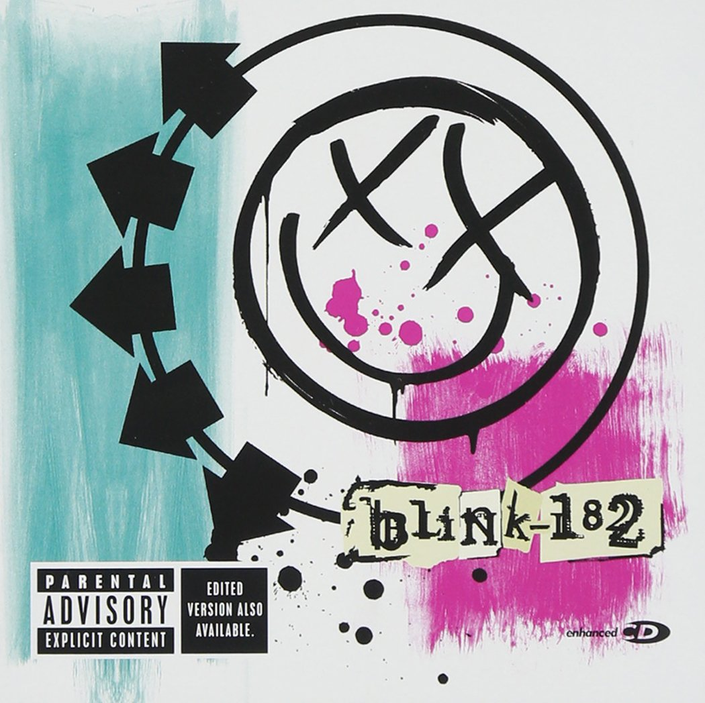
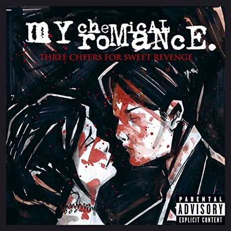
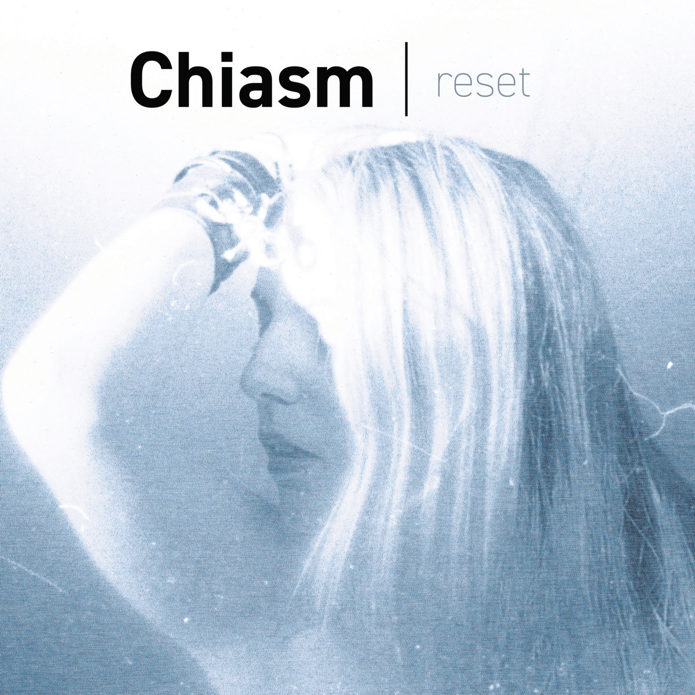
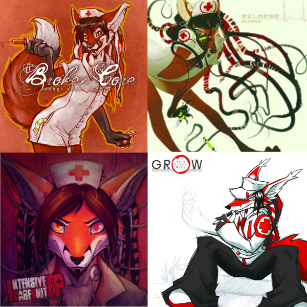
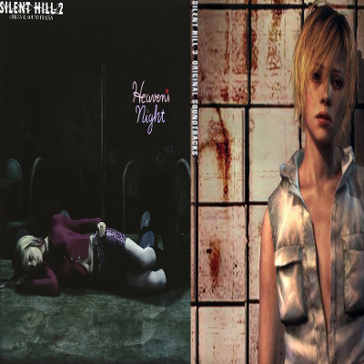
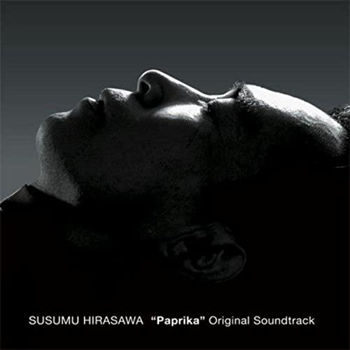

What's Been on Repeat?
Previous entries
| Name | Artist | Last featured on |
|---|---|---|
 Millennium Escalator Millennium Escalator |
Machine Girl | 3/23/25 |
| Kiri |
MONORAL | 12/8/24 |
| Alien |
Lebanon Hanover | 6/9/24 |
| Dont Call (LIVE) (Ft. Brigitte Naggar) |
Dabu | 4/8/24 |
| Haunted |
Laura Les | 3/3/24 |
| Never Fade Away |
Refused | 10/13/23 |
| Die Toteninsel (Emptiness) |
1000 Eyes | 1/20/23 |
| Glory |
Heaven Pierce Her | 1/3/23 |
| I'm Moovin' Nis |
Scoutellite/SYRSA | 12/12/22 |
| Quiet's Theme |
Akihiro Honda | 10/13/22 |
| Waiting For You |
Akira Yamaoka | 9/5/22 |
| Moonlight Shadow |
E-rotic | 8/15/22 |
| Around the World |
ATC | 6/27/22 |
| Forever |
Siah | 5/28/22 |
| Industrial Blue |
Jerry Lehr | 5/14/22 |
|  |
Blink-182Favorite Tracks: I Miss You, Always, Feeling This, Ghost on The Dancefloor, On Some Emo Shit, Dammit, First DateClassic Pop-Punk! If you're ever singing tom's parts you HAVE to say it like he would! it's the LAW! |
|  |
My Chemical RomanceFavorite Tracks: Helena, Cancer, Cemetery Drive, I'm not Okay (I Promise)If you're Emo, you already know what's up. That part in Helena that starts with "Can you hear me?" is like *MORPHINE ADMINISTERD* |
|  |
Chiasm BandcampFavorite Tracks: Space Lights, Isolated, Mice on a Wheel, Are You Okay? (original mix)If you're a Goth gamer, you might recognize Chiasm from Vampire The Masquerade Bloodlines, the song Isolated is a classic! Her later work takes on a new direction, but is absolutely packed with emotion. Definetly check her out! |
Linkin ParkFavorite Tracks: One More Light, Crawling, Numb, In the End, Breaking the Habit, Somewhere I BelongWhen I think about Linkin Park, all that comes to mind is Chester. His ability to balance between yelling and softly singing is unmatched. I don't believe in angels, but Chester might have been one. Rest well, thank you for being a light in the darkness for millions. | |
|  |
Renard (An Emma Essex alias) BandcampFavorite Tracks: Intensive Care Unit, Forcing You Into My Life, In Stereo (rmx), The Dark, System Failure, Scrape The HeavensRenard is probably the catalyst for my musical tastes. It all started with Intensive Care Unit, you've probably heard it somewhere, every YTPMV back in the day used it as a BGM. Ever since then I've listened to just about all the Lapfox era aliases, but Renard has always stuck with me the most. |
|  |
Akira YamaokaFavorite Tracks: Promise, You're Not Here, The Day of Night, I Want Love, Waiting For YouI adore the atmosphere of Silent Hill, and the music is in a league of its own. Yamaoka has a great range, from heavy industrial noise, soothing ambience, to alt rock, he does it all perfectly. Shoutout to Mary Elizabeth McGlynn for her awesome vocal work! |
|  |
Susumu HirasawaFavorite Tracks: Gattsu, The Girl In Byakkoya, Forces, Big BrotherI'm not sure what to clasify Hirasawa's music under, but it really is something worth listening to! I absolutely adore the vocal work, there's always this ethereal feel to it, even when it's distorted. |